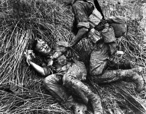
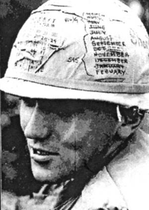
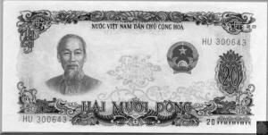

Trong chiến tranh Việt Nam, mối quan tâm lớn nhất của mỗi người lính chiến là sự hỗ trợ y tế một khi bị thương trên chiến trường. Đối với lính Mỹ, sự hỗ trợ này nằm trong tầm tay. Việc cứu thương có ảnh hưởng tới nhuệ khí của quân đội nên sự chăm sóc y tế luôn được khẩn trương thực hiện. Việc chuyển thương bằng trực thăng cho phép binh lính Mỹ được chữa trị thường chỉ sau vài giờ. Người Việt Nam ở bên kia chiến tuyến cũng đặc biệt quan tâm tới y tế, nhưng họ lại không có những điều kiện tương tự để chăm sóc cho thương binh của mình. Thương binh phải mất hàng ngày, thậm chí hàng tuần mới được chăm sóc, thậm chí là không bao giờ. Ngay cả khi có cơ sở y tế, sự khan hiếm thuốc men và y cụ đã ngăn trở công việc điều trị của họ. Đội ngũ y tế phải tự nỗ lực để bù đắp cho thiếu thốn khi có thể, còn khi không thể thì người thương binh buộc phải chịu đựng.  Và đây là những câu chuyện của họ…
hông ai hiểu tầm quan trọng của y tế đối với lực lượng chiến đấu hơn Lê Cao Đài. Đang là sinh viên y khoa ở Hà Nội vào năm 1946, khi cuộc chiến tranh chống Pháp khởi sự, ông bị cuốn vào quân đội để phục vụ cho lực lượng kháng chiến của Hà Nội – quân Việt Minh – vì thiếu bác sĩ.
Nâng cao kỹ năng theo cách nghề-dạy-nghề, Đài dần dần đáp ứng được đòi hỏi từ quân đội của Tướng Võ Nguyên Giáp trong cuộc chiến dài tám năm. Khi quân đội đang ăn mừng chiến thắng cuối cùng trước người Pháp tại Điện Biên Phủ thì Lê Cao Đài vẫn còn phải vật lộn để cứu sống những người vừa bị thương trong chiến dịch vĩ đại đó.
Rồi cuộc chiến với người Mỹ bùng nổ, Lê Cao Đài một lần nữa đáp lời kêu gọi của non sông. Khi đang giữ chức trưởng khoa phẫu thuật tại một viện quân y năm 1966, Đài, lúc này 37 tuổi, xung phong vào miền Nam làm việc. Ông được lệnh tổ chức và điều hành một bệnh viện chiến trường. Tập hợp được 400 nhân viên y tế từ các bệnh viện, Đài đã lập nên một bệnh viện có tên gọi 211. Thông thường, tỉ lệ lý tưởng cho các bệnh viện là một nhân viên y tế trên mỗi bệnh nhân, nhưng Đài hiểu rõ điều này là không thể bởi bệnh nhân ở chiến trường sẽ tăng lên mỗi ngày. Dù lực lượng quân y đã được mở rộng đáng kể so với hồi đánh Pháp, nhưng thực tế thương vong do công nghệ vũ khí hiện đại và điều kiện chiến trường xa xôi đã khiến họ bị quá tải, phải làm việc tới mức tối đa.
“Khi được lệnh vào Nam”, ông Đài kể, “mọi người đều háo hức. Chúng tôi không hề nghĩ rằng sẽ phải ở lại đó tới tám năm. Tôi nhớ hôm chuẩn bị lên đường cùng với một người bạn, anh này và vợ đã đến thăm gia đình tôi. Người vợ hỏi: ‘Các anh định ở trong đấy bao lâu?’. Tôi đáp sẽ ở lại chừng sáu tháng. Cô ấy khóc và bảo: ‘Thế mà nhà em nói sẽ ở lại tới một năm’. Và rốt cuộc, thay vì ở lại sáu tháng, tôi đã ở đó tám năm. Người đàn ông dự định ở lại một năm kia, đã nằm lại mãi mãi. Anh hy sinh tại miền Nam”

Có một sự khác biệt về thời gian phục vụ tại Việt Nam đối với một binh sĩ Mỹ so với một người lính Việt Nam. Lính Mỹ thường chỉ tham chiến tại Việt Nam trong mười hai tháng. Việc biết trước ngày xuất ngũ về mặt nào đó có tác dụng nâng cao ý chí cho binh lính Mỹ - mỗi buổi mai thức dậy đánh dấu một ngày nữa trôi qua, cũng có nghĩa là thời gian phục vụ tại Việt Nam được trừ bớt một ngày. Có rất nhiều loại “dấu mốc” được đánh vào một thời điểm nào đó của quân kỳ, người lính có thể được gọi là “người sắp về” sau khi đã phục vụ quá bán thời gian mười hai tháng quân hạn. Nhưng đối với các chiến binh Việt Nam, không bao giờ có khái niệm “người sắp về”. Đối với họ, thời gian chinh chiến là vô hạn. Mặc dù thời gian phục vụ ở chiến trường của mỗi cá nhân khác nhau, nhưng trải nghiệm của Lê Cao Đài không phải là không đặc trưng.°°°
Để giảm nguy cơ mất hết toàn bộ nhân viên của bệnh viện trong trường hợp bị không kích khi đang di chuyển trên Đường mòn Hồ Chí Minh (một con đường tiếp vận bí mật trong rừng, trải dài hàng ngàn cây số xuyên Việt Nam, qua Lào, Campuchia, để Hà Nội chi viện cho các chiến dịch ở miền Nam), Đài chia đoàn Bệnh viện Quân y 211 ra làm ba nhóm. Hai nhóm đi bộ còn nhóm của Đài đi xe tải, cho tới khi Đông Hà (nằm ngay phía Nam vĩ tuyến 17 ở tỉnh Quảng Trị). Tại đây, họ bị không kích và mất hầu hết xe cộ nên bắt buộc phải đi bộ ở chặng đường còn lại.
Đoàn của Bệnh viện Quân y 211 hoàn tất cuộc hành trình mà không hề sứt mẻ lực lượng. Vài người ốm nặng, chủ yếu là sốt rét và một số căn bệnh khác, buộc phải trở về Hà Nội, nhưng không có thương vong do súng đạn. Tuy nhiên, với các trang thiết bị y tế thì lại khác.
“Đó là những thiết bị rất nặng”, ông Đài giải thích. “Tổng cộng có chừng một ngàn hộp được chuyên chở bằng xe đạp. Tôi tự mình cõng thiết bị phẩu thuật (sau khi bị không kích ở Đông Hà)… Nhưng phần lớn y cụ đều bị mất trong quá trình vận chuyển. Chỉ có chừng một phần mười tới đích… và cũng không còn nguyên bộ… Chẳng hạn, máy X-quang tới nơi nhưng thiếu mất cái ống, máy phát điện và các thiết bị X-quang tới nơi nhưng cái sau thiếu tấm che bằng chì”.
Hầu hết các thiết bị đều thất lạc trên đường, còn những thứ đến đích thì đôi khi lại rất buồn cười.
“Khi chúng tôi sắp rời Hà Nội, một nữ quân nhân đã chuyển từ guốc sang dùng dép cao su”, ông Đài kể tiếp, “Cô ấy bỏ đôi guốc cũ ấy vào trong hộp. (Dép cao su là một loại dép rất tiện lợi, với đế dép làm từ lốp xe còn quai làm từ săm xe. Đó là loại dép cơ bản của tất cả lính tráng Bắc Việt). Nhiều tháng sau, khi mở một hộp giấy để kiểm hàng thì cô ấy bắt gặp đôi guốc”. Một đôi guốc cũ đã vượt qua bao vụ ném bom và hàng loạt cuộc chuyển giao ở các binh trạm (là cơ sở quân sự hoạt động riêng lẻ và chịu trách nhiệm trong một khu vực) dọc Đường mòn Hồ Chí Minh, trong khi nhiều thiết bị y tế quan trọng thì lại rơi rớt.
Hai tháng sau ngày khởi hành vào Nam, ba nhóm của Bệnh viện 211 gặp nhau ở Ngã ba Đông Dương, nơi giáp giới giữa Việt Nam, Campuchia và Lào.
“Chúng tôi lập bệnh viện ngay giữa biên giới ba nước và ở đó khoảng sáu tháng”, ông Đài kể. “Chỗ này quá xa mặt trận. Vì thế chúng tôi phải dịch vào gần hơn. Tôi đã di chuyển rất nhiều trong suốt cuộc chiến. Nơi tôi ở lâu nhất cũng chỉ chừng một năm. Thường thì tôi chỉ ở một nơi trong khoảng hai tới ba tháng, hoặc cho tới lúc bị lộ. Khi người Mỹ tiến hành phun thuốc rụng lá (Chất độc Cam) trong khu rừng mà chúng tôi đóng trại, thì chúng tôi lại phải chuyển chỗ”.
Sơ tán một bệnh viện với 400 nhân viên, cùng khoảng chừng 1.000 đến 1.800 người bệnh, là việc không hề dễ dàng. Bên cạnh các yêu cầu hậu cần cho cuộc dịch chuyển, việc thành lập cơ sở mới đòi hỏi rất nhiều nhân công. Một số cơ sở y tế được đặt trên mặt đất, với sự che chắn của cây bụi, nhưng phần lớn phương tiện đều được đặt dưới hầm. Điều này đòi hỏi người ta phải đào một loạt những hầm hở sâu một mét, mỗi cái có sức chứa chừng bốn đến năm người. Bên trên mặt đất nửa mét có mái tre hoặc tranh để che nắng mưa. Một hầm chữ A tránh bom có độ sâu hai mét, sức chứa chừng bốn đến năm người, được đào thông vào căn hầm này. Để lập được một bệnh viện với khoảng 1.000 bệnh nhân và 400 nhân viên đòi hỏi phải đào chừng 280 hầm hở và hầm chữ A. Hầu hết bệnh nhân không thể tham gia đào hầm, vì thế trách nhiệm lại dồn lên các nhân viên y tế và một ít lính bộ binh không đánh trận. Làm một căn cứ mới mất chừng một tháng.
Các nguyên tắc được áp dụng trong việc xây dựng bệnh viện chiến trường đã tạo thêm gánh nặng cho đội ngũ nhân viên. Theo quy định, hầm trú ẩn được bố trí khá xa nhau, cự ly không quá ba mươi mét, để tránh việc một quả bom có thể làm sập hơn một hầm.
Việc bố trí hầm cách biệt như thế khiến ông Đài rất khó thực hiện việc kiểm tra bênh nhân và nhân viên khắp bệnh viện mỗi ngày. Ông Đài giải thích: “Chúng tôi bố trí bệnh viện trong một khu vực rất rộng. Vì thế, nếu muốn đi thăm một bệnh nhân, đôi khi tôi phải mất một ngày mới tới nơi. Đi từ đầu này tới đầu kia bệnh viện thường hết một ngày”.
An toàn là mối quan tâm thường trực. Bệnh viện thường nằm cách chiến trường một khoảng cách an toàn, nhưng đội ngũ nhân viên phải chịu trách nhiệm thường xuyên về vấn đề an ninh bởi họ ở xa các đơn vị quân đội khác. Ông Đài luôn luôn lập một vọng gác trên cây để theo dõi bầu trời do rừng cây rậm rạp khiến việc quan sát mặt đất rất khó khăn. Ông biết rằng kẻ địch thường sử dụng trực thăng để thả quân nhằm tiếp cận mục tiêu nhanh và trực tiếp. Duy trì việc quan sát bầu trời thường xuyên giúp bệnh viện có thể phát hiện sớm sự hiện diện của địch trong khu vực. Việc canh phòng vì thế trở thành nhiệm vụ hằng ngày của bệnh viện.
Khi thấy trực thăng, người trinh sát, thông qua điện thoại hữu tuyến, thông báo với ông Đại về hướng cũng như cự ly. Cây cối rậm rạp tới mức nhiều khi người quan sát không thể biết được chiếc trực thăng, bị che khuất sau những rặng cây, sẽ thực sự đáp xuống hay chỉ bay ngang qua. Nhưng Đài không bao giờ bỏ qua một chi tiết nhỏ nào. Ông tin mọi chuyển động đó đều là nỗ lực của kẻ thù để đưa các đội biệt kích do thám vào khu vực. Sau khi được báo cáo về cự ly và phương hướng của máy bay, Đài thường hành động ngay lập tức.
“Tôi có thể điều một nhóm người bảo vệ bệnh viện”, ông nói. “Đôi lúc họ phải chiến đấu. Có lúc họ mới bắn vài loạt thì đám biệt kích đã lùi ngay, gọi trực thăng tới để rút. Tôi đã thấy lính biệt kích rất nhiều lần. Do máy bay không thể đáp xuống vì rừng quá dày, người ta thường dùng dây thả từ trực thăng để lính đu xuống… Đôi khi chúng tôi thấy bốn năm gã đang đu dưới bụng trực thăng. (Đây là phương pháp SPIE – kỹ thuật đổ/rút quân phục vụ mục đích đặc biệt – được sử dụng để đổ/rút quân nhanh chóng mà không cần đáp trực thăng. Lính biệt kích mặc áo giáp được gắn vào một sợi dây bên dưới bụng trực thăng, từng đôi một. Trong trường hợp đổ quân, sau khi cất cánh từ căn cứ, họ đu lủng lẳng dưới bụng trực thăng để bay tới đích. Một khi tới nơi, máy bay hạ dần độ cao để một cặp lính biệt kích tiếp đất, cởi móc áo giáp ra rồi chạy vào rừng để yểm trợ cho cặp tiếp theo. Khi rút quân thì tiến trình đảo ngược lại). Đôi khi tôi chứng kiến mấy tay lính biệt kích chết bởi lúc trực thăng bốc lên, họ bị vướng vào cành cây cao và rơi xuống đất. Chúng tôi buộc phải tự bảo vệ mình. Nếu bị phát hiện, tôi phải ra lệnh rời đi. Lý do chúng tôi phải di chuyển rất đơn giản – chúng tôi biết chắc rằng một vụ ném bom B-52 sẽ được thực hiện trong cái đêm mà căn cứ bị phát hiện.”
Có một lần, đơn vị của Đài đã bắn rơi một trực thăng Mỹ bay sát cơ sở của ông. Họ chỉ bắn súng trường để xua máy bay đi, không ngờ chiếc máy bay lại đâm xuống đất.
“Tôi thấy dường như đạn không phá hỏng máy bay bao nhiêu”, ông kể. “Tại hiện trường, tôi thấy chỉ có một lỗ thủng nhỏ do đạn gây ra. Có lẽ nó đã làm đứt một sợi dây nào đó. Chiếc máy bay bị rơi chở chừng sáu người. Lúc chúng tôi đến thì không còn ai ở đó. Sau khi máy bay rơi, người Mỹ đã lập tức điều nhiều trực thăng khác tới giải cứu”.
°°°
Ông Đài nhớ lại, trước khi rời Hà Nội để vào Nam, ông từng được nghe kể rất ngắn gọn về cuộc sống trong rừng rậm. “Thủ trưởng của tôi đã ở một năm tại miền Nam trước khi trở lại miền Bắc”, Đài kể. “Ông ấy bảo tôi rằng hãy cứ hình dung cuộc sống ở nơi đó như Robinson Crusoe trên hoang đảo ấy”. Chẳng bao lâu sau Đài nhận thấy rằng thượng cấp của mình đã không hề cường điệu. “Thiếu thốn đủ đường. Chúng tôi thậm chí không có dao phẫu thuật”. Để tồn tại và duy trì chức năng của một bệnh viện chiến trường, nhóm của ông Đài đã phải ứng biến trong hoàn cảnh khắc nghiệt.
Đài và các thành viên trong bệnh viện nhanh chóng tìm ra cách thức để bù khuyết cho thiếu thốn. Ông rất hài lòng trước sự tìm tòi sáng tạo của nhân viên trong việc sử dụng những thiết bị dường như chẳng liên quan gì tới y tế. Điều trớ trêu là những vật dụng không liên quan tới y tế mà họ sử dụng vào mục đích chữa bệnh ấy lại đến từ một nguồn rất dồi dào nhưng lại ngoài mong đợi – đó là Chính phủ Mỹ.
Trong rất nhiều thiếu thốn mà Bệnh viện Quân y 211 đối mặt, thiếu thiết bị mổ là một bài toán nan giải. Ông Đài kể về việc xoay xở của đội ngũ nhân viên: “Chúng tôi sử dụng mảnh kim loại, thường là từ số bom không phát nổ của Mỹ. Chúng tôi lấy kim loại từ những quả bom đó để làm dao mổ và một số thiết bị khác. Chúng tôi cũng dùng kim loại từ vỏ đạn pháo, hoặc mảnh nhôm từ xác máy bay. Tất cả các nhu cầu về y tế được đáp ứng theo kiểu này – từ thiết bị phẫu thuật, hộp tiệt trùng y cụ, ống nghe…”.
Ông Đài nhấn mạnh: “Chúng tôi không bỏ phí thứ gì mà người Mỹ cung cấp”. Bất cứ phế liệu nào cũng được tháo tung rồi chế tác để sử dụng vào việc này việc kia. Chẳng hạn như pháo sáng được người Mỹ thả xuống vào ban đêm để quan sát hoạt động của quân Bắc Việt bên dưới đã cung cấp vật liệu cho rất nhiều ứng dụng: ống pháo sáng được dùng làm ống nghe; dây dù được tách ra để làm chỉ khâu y tế; vải dù dùng để băng bó.
Khi phát hiện máy bay rơi, người ta nhanh chóng đến tìm kiếm những vật liệu còn sót lại để dùng. Dây điện được tháo từ máy bay, sau đó tách vỏ cao su ra khỏi lõi kim loại. Vỏ cao su dùng làm ống truyền tĩnh mạch.
“Người Mỹ giúp chúng tôi rất nhiều trong thời buổi thiếu thốn thiết bị”, ông Đài cười.
Bệnh viện cũng thiếu ống tiêm. Một lần nữa, các nhân viên y tế dựa vào trí sáng tạo của mình. “Thoạt tiên, chúng tôi không có cách nào đựng thuốc để tiêm”, ông Đài giải thích. “Chúng tôi phải dùng lại nhiều lần ống tiêm thủy tinh. Sau khi tiêm kháng sinh hoặc một vài loại thuốc khác, chúng tôi giữ lại ống tiêm để dùng tiếp. Nhưng không thể giữ tất cả lại được… Vì thế, chúng tôi quyết định sản xuất ngay tại bệnh viện…Khi có một đơn vị mới từ Hà Nội vào, tôi hỏi sĩ quan chỉ huy rằng anh ấy có người thợ thủ công nào không. Anh ấy có ba người. Họ bảo tôi để làm ống tiêm thì chỉ cần thủy tinh hoặc chai lọ cũ là đủ. Từ đó, việc sản xuất ống tiêm trở nên rất dễ dàng.
Vào giai đoạn này – từ năm 1967 đến 1968 – chúng tôi bắt đầu giải phóng một số vùng ở Campuchia. Bên trong và xung quanh các cơ sở quân sự ở Campuchia có rất nhiều chai bia và sôđa rỗng, một nguồn vật liệu tốt để làm ống tiêm. Những thợ thủ công kia nói với chúng tôi rằng điều quan trọng nhất là xây cái hầm lò để đun thủy tinh. May thay lúc đó không hiểu sao có một ít gạch trong kho. Không biết ai đã lệnh đưa gạch tới đây nhưng chúng tôi có hơn chục viên gạch để làm lò.
Sức nóng của lò cũng là điều quan trọng. Rất dễ để có than củi ở trong rừng. Nhưng than củi không cho sức nóng tốt bằng than đá. Một người ở binh xưởng vũ khí rất rành về lĩnh vực này. Anh ấy nói có thể dùng than củi nhưng không phải loại thường. Đó là loại than củi được đốt trong điều kiện yếm khí. Loại than này cho nhiệt lượng cao. Chúng tôi đã làm theo chỉ dẫn của anh ấy.
Sau khi đã có lò nung và loại than cần thiết, chúng tôi bắt đầu nấu chảy thủy tinh. Các thợ thủ công sau đó thổi thành ống tiêm… Chúng tôi đã vận dụng sự sáng tạo của mình để sản xuất ống tiêm trong suốt cuộc chiến”.
Khi người Mỹ không cung cấp đủ vật liệu cần thiết đáp ứng nhu cầu của bệnh viện, ông Đài lại ứng biến – chẳng hạn khi thiếu chất cồn sát trùng dẫn đến tình trạng nhiễm trùng.
“Chúng tôi có một ít thuốc khử trùng mang từ Bắc vào”. Đài nhớ lại. “Nhưng thiếu cồn trầm trọng. Vì thế tôi cử nhân viên tới gặp ‘người dân tộc’. (Người Việt Nam gọi các nhóm dân tộc ít người bản địa sống ở vùng rừng núi là “người dân tộc” hoặc đơn giản chỉ là “dân tộc”.) Họ biêt cách làm cồn. Họ thường nấu rượu – rượu gạo. Nhưng vấn đề khó khăn ở đây là chúng tôi không biêt cách ủ men. Vì thế chúng tôi tới gặp người dân tộc để tìm hiểu xem họ dùng lá cây gì để gây men. Sau đó, chúng tôi trồng sắn để lấy tinh bột phục vụ cho việc nấu cồn”.
Đội ngũ nhân viên Bệnh viện Quân y 211 còn học cách sử dụng chất liệu thảo mộc để chữa bệnh từ người dân tộc. Một số thứ dùng để gây buồn ngủ; một số khác được sử dụng như vitamin.
“Chúng tôi còn học từ đồng bào dân tộc cách để trị sốt rét – chẳng hạn như dùng giun đất”, ông Đài cho biết. “Chúng tôi nấu giun đất lên và lấy chất nhớt của nó để trị bệnh”. Những phương pháp này chưa có cơ sở lý luận khoa học, ông Đài nhìn nhận, nhưng người dân tộc thiểu số - dù có cuộc sống lạc hậu – xét về khía cạnh ứng dụng thảo mộc để chữa bệnh thì họ là bậc thầy. “Gần đây”, ông đưa dẫn chứng, “có một bài báo trên tạp chí ở Pháp cho biết cộng đồng y khoa đã nhìn nhận giá trị của loài giun đất”.
Việc cung cấp điện năng tối thiểu cho bệnh viện cũng là thách thức lớn. Ở những nơi có suối nước, người ta có thể xây trạm thủy điện nhỏ. Nhưng thông thường, họ dựa vào máy phát chạy dầu. Ông Đài hồi tưởng, trước năm 1967, “không có dầu để chạy máy phát nên quân của chúng tôi phải phục kích các đoàn xe đối phương để cướp dầu”.
Nhưng các trường hợp cấp cứu thì không thể chờ đợi dầu được. Bác sĩ phải phẫu thuật ngay khi người bị thương được đưa đến, dù lúc đó có dầu để chạy máy phát hay không. Vì thế, đối với đơn vị của ông Đài, nhiều khi phải dùng một nguồn năng lượng có sẵn – sức người. Người ta nối một chiếc xe đạp vào máy phát. Lúc Bác sĩ Đài đã sẵn sàng phẫu thuật cho bệnh nhân, một người có sức khỏe được cử ra đạp xe để làm chạy máy phát. Ban đầu đèn điện trong phòng mổ nhập nhòe khi máy phát hoạt động. Đến lúc người lính kia bắt được nhịp, đèn sáng ổn định hơn, và Bác sĩ Đài bắt tay vào phẫu thuật. Người lính đạp xe kia trở thành chiếc phao cứu sinh cho bệnh nhân, cung cấp điện thắp sáng trong phòng mổ cũng như vận hành các thiết bị liên quan. Khi người lính này mệt, người khác sẽ lên thay.
“Đôi khi”, ông Đài kể, “tôi phẫu thuật suốt đêm với nguồn điện được cung cấp bằng hình thức ấy”.
Việc thiếu điện còn gây ra nhiều vấn đề khác, chẳng hạn không thể dùng tủ lạnh để bảo quản máu. Những người lính khỏe mạnh không thể hiến máu vì họ phải giữ sức để chiến đấu ngoài mặt trận. Vì thế, trách nhiệm hiếm máu dồn lên vai các nhân viên bệnh viện.
“Đội ngũ nhân viên y tế thường xuyên hiến máu”, ông Đài hồi tưởng. “Tôi cũng đã nhiều lần hiến máu cho bệnh nhân… Tôi thường hiến máu sau, chứ không phải trước, mỗi ca phẫu thuật”. (Vì lý do trên mà người ta phải thực hiện việc truyền máu trực tiếp từ người cho tới người nhận và không bao giờ vượt quá năm mươi đến một trăm mililít. Trước khi rời Hà Nội, các nhân viên đã được kiểm tra nhóm máu nên họ biết rằng mình có thể hiến cho ai và không thể hiến cho ai. Khi có người lính bất tỉnh và không xác định được nhóm máu của anh ta, một nhân viên nhóm máu O sẽ là người cho máu).
Đội ngũ y tế ở đây còn đối mặt với tình trạng thiếu giấy trầm trọng. Ông Đài diễn giải: “Chúng tôi cần ghi chú tình hình sức khỏe bệnh nhân nhưng lại thiếu giấy. Ban đầu, không có mẩu giấy nào. Chúng tôi thường bóc nhãn chai lọ rồi viết vào mặt sau”.
Mỗi năm, ông Đài thường tuyên dương các thành viên của bệnh viện vì những đóng góp cá nhân của họ, tặng họ giấy chứng nhận thành tích. Nhưng vì thiếu giấy trầm trọng, rốt cuộc ông đã sử dụng những tấm bằng khen để viết nhật ký sức khỏe bệnh nhân. Thế là đến lúc trao giải, ông phải vắt óc suy nghĩ phương cách mới. “Tôi chẻ tre ra và dùng mặt bên trong để viết bằng khen”, ông chia sẻ.
Sự thiếu thốn thường trực và nghiêm trọng nhất đó là thực phẩm. Nhiệm vụ cung cấp thức ăn lại dồn lên đầu đội ngũ nhân viên y tế, vốn đã phải căng sức với công việc chăm sóc và bảo vệ an toàn cho bệnh nhân.
Ông Đài kể: “Chúng tôi hầu như không được cung cấp lương thực, thực phẩm. Thế nên nhân viên phải tự xoay xở. Trong suốt tám năm, chúng tôi thường xuyên trồng sắn, chứ gạo nhận từ quân đội rất ít. Cùng với gạo, quân đội cũng cung cấp ít muối, bột ngọt. Nhưng chúng tôi phải trồng sắn để có cái ăn. Quân đội chu cấp gạo cho tất cả bệnh nhân là quá may mắn rồi. Chúng tôi còn tổ chức các nhóm săn và đánh cá để cái thiện bữa ăn. Đánh cá thì dùng lưới; còn đi săn thì dùng súng AK-47 (súng tiểu liên tự động).
Chúng tôi săn lợn lòi, nai và khỉ. Khỉ là một phần thực phẩm dồi dào. Có lần, thậm chí chúng tôi còn giết thịt một con cọp. Chúng tôi cũng săn voi – rất nhiều voi. Trong năm đầu tiên ở miền Nam, chúng tôi giết mười tám con voi… Mỗi con voi cho hàng trăm cân thịt. Khi bắn hạ được một con voi, số thịt nào mà không bảo quản được thì phải ăn càng nhanh càng tốt. Mỗi con voi có thể cho chúng tôi thức ăn trong chừng một tháng.
Thịt (voi) bắt đầu ôi và bốc mùi sau hai mươi bốn giờ nên phải tìm cách để bảo quản. Đôi lúc thịt được trữ trong dòng suối mát. Lúc khác, chúng tôi lại phơi khô. Lại có lúc chúng tôi muối thịt, dù muối ở chốn rừng núi rất khan hiếm”.
Phát hiện con mồi chỉ là một trong nhiều vấn đề mà các thợ săn của ông Đài phải đối mặt. Sau khi giết con voi đầu tiên, họ gặp nhiều khó khăn khác:
“Ban đầu chúng tôi hầu như không thể xẻ thịt voi được vì da chúng rất dày. Một bác sĩ phẫu thuật liền đề nghị mổ bụng voi ra, sau đó đứng vào trong bụng và cắt từ trong ra ngoài. Nhân viên của tôi đã đứng vào bụng voi để xẻ thịt, máu ngập tới mắt cá. Thật khủng khiếp”.
Một số bộ phận của voi được ưa chuộng hơn những phần khác. “Những thứ ăn ngon nhất trong cơ thể voi”, ông Đài chia sẻ kinh nghiệm của một người sành ăn thịt voi, “là vòi và phần gần gan bàn chân”.
Không thể lấy hết thịt từ cơ thể con thú. “Không phải lúc nào chúng tôi cũng có thể róc hết thịt”, Đài cho biết. “Khó mà xẻ thịt ở phía cơ thể con vật tiếp với mặt đất khi bị ngã xuống do trúng đạn. Phần thịt đó bị sức nặng toàn bộ cơ thể voi đè lên nên bị nén rất chặt, không cắt được”.
Khi xẻ thịt voi được rồi, việc vận chuyển cũng là thách thức lớn.
“Chúng tôi hối hả lấy càng nhiều thịt càng tốt”, ông Đài giải thích. “Có điều địa điểm nơi voi bị bắn thường ở rất xa bệnh viện – hầu hết đều cách xa chừng năm mươi cây số để tránh làm lộ cơ sở chữa bệnh. Mỗi khi bắn xong là xạ thủ phải trở về bệnh viện để gọi thêm người tới róc thịt và vận chuyển chiến lợi phẩm. Thời gian cho việc vận chuyển khá dài, đến nỗi nhiều lúc thịt bắt đầu bốc mùi khi về tới nơi”.
Mùi vị thịt voi thật chẳng xứng với công sức mà người ta bỏ ra. “Thịt voi – tương tự thịt cọp – chẳng ngon lành gì”, ông Đài tâm sự.
Dù thế, người ta vẫn cố lấy càng nhiều thứ càng tốt từ con vật bị giết – ngay cả xương cũng được tận dụng. Xương voi và cọp được nghiền nát rồi trộn với một số thứ khác để tạo nên loại rượu thuốc trị thấp khớp.
°°°
Có một chuyến đi săn đã dẫn đến phát hiện thú vị. Không nhớ chính xác thời điểm (năm 1970 hay 1971), ông Đài chỉ nhớ rằng sự việc diễn ra ở vùng biên giới giữa Việt Nam và Campuchia. Lúc đó, nhóm đi săn gặp xác một chiếc trực thăng rơi. Họ đã lục soát để tìm các vật khả dụng và phát hiện sáu hay bảy bộ xương gì đấy. Chiếc máy bay này chở bốn hoặc năm lính biệt kích miền Nam cùng hai người Mỹ. Quan sát cây cối mọc um tùm tại hiện trường cũng như hiện trạng các bộ xương, đoàn thợ săn phỏng đoán máy bay đã rơi cách đấy chừng một hoặc hai năm. Dấu răng trên các bộ xương cũng như sự phân tán của chúng cho thấy các thi thể này từng bị thú rừng ăn thịt. Trên xương cổ tay của một bộ xương phía trong máy bay có chiếc đồng hồ Seiko. Dây đồng hồ khắc chữ “Buôn Mê Thuột”, một địa danh ở tỉnh Đắk Lắk. Tháo chiếc đồng hồ khỏi bộ xương, một thợ săn khẽ lắc nó. Vừa lắc xong, người này ngạc nhiên khi thấy chiếc đồng hồ hoạt động trở lại – dường như là một sự gợi nhắc nhẹ nhàng cho nhóm thợ săn rằng thời gian vẫn trôi trong cuộc đời của người này, rất lâu sau khi cái chết đến với người khác.
Việc săn bắt và đánh cá không thể cung cấp đủ thức ăn cho đội ngũ nhân sự bệnh viện. Vì thế họ buộc phải làm ruộng.
“Chúng tôi có một quy định”, ông Đài cho biết. “Mỗi đơn vị đều phải trồng sắn. Phải trồng tới một trăm hécta mỗi năm để có đủ lương thực cho đơn vị. Cách trồng sắn rất thô sơ. Đầu tiên, chúng tôi tìm những khu đất thích hợp trong rừng, tốt nhất là một khu đất phẳng, gần suối. Thông thường những nơi này có nhiều cây cối, chúng tôi phải đốn xuống và chờ đến khi xác cây khô vào tháng Ba hoặc tháng Tư – lúc mùa mưa bắt đầu. Đến lúc đó chúng tôi đốt xác cây để dọn sạch khu đất. Chúng tôi dọn hết các cây còn sót lại. Sau đó thì trồng sắn và lúa. Trỉa lúa là việc rất khó. Chúng tôi dùng hai cây gậy – người đi trước cầm gậy chọc xuống đất tạo thành hai lỗ. Người đi sau thả hạt lúa vào lỗ rồi nhanh chóng khỏa đất để lấp hạt lúa lại, bằng không chim sẽ ăn mất. Rồi chúng tôi chờ tới mùa mưa. Lúa chín và chúng tôi thu hoạch. Việc thu hoạch đều làm bằng tay – không dùng bất cứ công cụ nào, chẳng hạn cái hái, vì loại lúa này rất dễ rụng. Chúng tôi không cắt lúa cũng vì lý do an ninh nữa. Khi đang thu hoạch, máy bay có thể lượn trên đầu. Thế nên việc chừa lại cây lúa là để có chỗ ẩn nấp… Bất cứ nhân viên nào rảnh đều phải lặn lội nguyên ngày từ bệnh viện tới rẫy để thu hoạch… Họ tránh bị phát hiện bằng cách ngồi xổm giữa những bụi lúa, rồi lấy tay tuốt cho hạt lúa rời ra và bỏ vào chiếc giỏ mang sau lưng. Bằng cách này, họ tránh bị phát hiện”.
Các khu canh tác thường nằm cách xa bệnh viện chừng hai mươi tới ba mươi cây số. Vì thế, khi họ đốt xác cây để dọn rẫy hay khi lúa chín, dù bị máy bay phát hiện thì cũng không hề gì, bởi phi công thường tưởng đó là ruộng của người dân tộc trong vùng. Nhưng cũng có khi lính Mỹ nhận ra, thế là ông Đài và đồng đội đành phải nhìn bao công lao của mình thành tro bụi khi ruộng bị phun hóa chất gây rụng lá. Trong trường hợp đó, thật khó để bòn mót được gì từ đồng lúa, nhưng họ vẫn cố gắng vớt vát đôi chút từ rẫy sắn. Do củ sắn nằm sâu dưới đất, họ cố gắng đào lấy củ trước khi chất độc thấm xuống.
Lính Việt Nam trong khu vực thường tiếp xúc với các cộng đồng dân tộc ít người, vốn đã định cư ở đây hàng ngàn năm. Ông Đài nhớ lại chuyện liên quan tới một anh lính và cô gái người dân tộc trẻ đẹp. “Người dân tộc rất hồn nhiên”, ông nói. “Có lần chúng tôi dừng chân ở điểm phát lương thực cho bộ đội. Tôi chợt thấy một cô gái dân tộc đứng gần đấy tỏ vẻ rất giận dữ. Người dân tộc rất tốt bụng nhưng cũng dễ nổi nóng. Tôi liền tiến đến và hỏi điều gì khiến cô ấy bực mình như thế. Nhưng cô ta chỉ lặp đi lặp lại: ‘Một là một, hai cũng là một’. Cô ấy cứ nhắc đi nhắc lại câu đó, và sau mỗi lần nói thì nỗi giận dữ càng dâng lên. Tôi cố hỏi cô ta có điều gì phiền toái vậy và câu ‘Một là một, hai cũng là một’ nghĩa là gì. Cô ấy không muốn nói với tôi nhưng tôi cứ nài nỉ mãi. Cuối cùng cô ấy mới chịu nói.
Số là có một anh lính bảo rằng nếu cô cho anh ta sờ vú thì anh ta sẽ tặng cô một chiếc kẹp tóc. Cô gái đồng ý và để cho anh ta làm điều đó. Anh ta tiến tới chạm tay vào cả hai vú của cô – nhưng chỉ đưa cho cô một chiếc kẹp.
‘Anh ta sờ hai bên’, cô gái nói. ‘Lẽ ra anh ta phải đưa cho tôi hai chiếc kẹp’. Khi cô gái kết thúc câu chuyện, tôi hỏi người nào đã làm điều đó với cô. Tôi nhìn quanh và phát hiện một anh lính trẻ đang nhìn chúng tôi rồi chợt quay mặt đi lảng tránh. Tôi biết đó là thủ phạm. Tôi gọi anh chàng và hỏi tại sao lại làm điều đó với người ta. Anh chàng còn rất trẻ, mép lún phún ria. Tôi nói với anh ta rằng làm như vậy là không nên. Và tôi bảo anh ta, giờ đã lỡ làm rồi thì cũng không nên ăn gian làm gì. Anh chàng bối rối thừa nhận: ‘Tại em chỉ có mỗi cái kẹp thôi’”.
Người dân tộc nhiều khi là nguồn cung cấp một số vật dụng cần thiết. Để có được điều đó, người ta phải thực hiện đổi chác – thông qua một tiến trình thương lượng mà người dân tộc luôn tỏ ra rất thành thạo và giỏi sắp xếp.
“Họ không dùng tiền mặt. Thậm chí họ không biết sử dụng tiền như thế nào, điều này không phải là trở ngại bởi lính tráng chúng tôi cũng chẳng có tiền. Vì vậy, chúng tôi thường trao đổi… Chẳng hạn, nếu anh muốn mua một con lợn, anh phải đưa cho họ một số thứ có giá trị tương đương. Có lần tôi đưa cho nhân viên chiếc đồng hồ và bảo cậu ta đi đổi một con lợn của đồng bào. Nhưng khi trở về, câu ta bảo không đổi được. Cậu ta kể rằng người dân tộc nói họ không thể đeo đồng hồ khi bơi dưới suối. À, thì ra chiếc đồng hồ Liên Xô này không có tính năng chống thấm. Người dân tộc thường xuống suối đánh cá và họ đủ thông minh để biết rằng chiếc đồng hồ đó không phù hợp”.
Ông Đài nhớ lại một lần trao đổi khác: “Có hôm tôi đem mấy chiếc quần đùi đi đổi một con lợn. Tôi tới ngôi làng gần đấy. Người dân tộc mà tôi gặp bảo rằng ông ta sẵn sàng đổi lợn lấy quần đùi. Nhưng ông ta chỉ chịu đưa cho tôi con lợn bé tí. Tôi thấy có con lợn to hơn liền nói với ông ta rằng tôi muốn con kia. Ông ấy liền hét lên rằng nếu tôi đem tới chiếc quần rộng hơn thì ông ta mới chịu đổi con lợn lớn hơn”.
°°°

Thời chiến tranh, một số người dân tộc được đưa ra Hà Nội để tham gia một khóa đào tạo về y tế do chính quyền Việt Nam triển khai. Ông Đài nhớ chuyện một người dân tộc đi chợ ở Hà Nội và lần đầu tiên làm quen với tiền mặt. Nhiều tờ tiền có mệnh giá khác nhau ở Việt Nam đều in hình lãnh tụ Hồ Chí Minh, và điều này gây bối rối cho người kia. Ông Đài kể: “Ông ta rất lúng túng khi sử dụng tiền. Ông ta kể: ‘Khi mua hàng, tôi đưa cho người bán một tờ giấy có hình Bác Hồ, nhưng rồi họ đưa trả lại cho tôi nhiều tờ giấy có hình Bác Hồ’”.
Một câu chuyện liên quan tới người dân tộc đã cho ông Đài thấy rằng có những thứ hợp lý với người này thì lại bất hợp lý với người kia – tùy theo góc nhìn. Có một người dân tộc được tặng chiếc huy hiệu mang hình Hồ Chí Minh. Ông ta liền đeo ngược huy hiệu trên túi áo. Khi có người nói rằng đeo như vậy là sai, ông ta đã cự lại. Ông ta giải thích rằng đeo như thế mới đúng, bởi khi cúi xuống để nhìn vào hình Bác Hồ, ông ta thấy hình nằm ở một tư thế đúng – đầu ông và đầu Bác Hồ cùng hướng với nhau. Nếu đeo theo chiều kia, ông giải thích, thì khi cúi xuống nhìn huy hiệu ông ta sẽ thấy hình Bác Hồ ngược lại.
Người dân tộc có nhiều truyền thống rất lạ. Một trong những truyền thống đó là tục cà răng. Họ tin tục này – thường được cha mẹ làm cho những đứa trẻ mới lên mười hai tuổi – sẽ giúp sống lâu, nếu không cà răng thì sẽ chết yểu. Bên cạnh đó còn có tục xăm mình, đặc biệt là xăm trên mặt, và tục xâu tai. (Người giàu có thường đeo bông tai bằng ngà, trong khi người nghèo thường xỏ một que tre).
Khi làm quen với cuộc sống đô thị ở Hà Nội, một vài người dân tộc bắt đầu hoài nghi về các truyền thống lâu đời của mình. Chẳng bao lâu sau họ không còn cà răng và xâu tai nữa.
Thời điểm Bệnh viện 211 lần đầu tiên vào miền Nam, các phụ nữ dân tộc thường để ngực trần. Ông Đài nhớ lại: “Có một gia đình dân tộc sống gần bệnh viện. Một ngày nọ tôi thấy những nữ thành viên của gia đình này bắt đầu mặc áo ngực. Tôi nhận ra rằng nữ nhân viên của tôi đã lấy áo ngực để đổi thực phẩm của bà con dân tộc”.
Rất nhiều lần, ông Đài thực hiện nhiệm vụ trong những điều kiện rất nghiệt ngã:
“Đôi khi tôi thức suốt đêm để phẫu thuật và ngủ vào ngày hôm sau. Nhiều lúc bom rơi xung quanh. Phòng phẫu thuật nằm lộ thiên nhưng trong tình huống quá nguy hiểm, chúng tôi chuyển xuống hầm… Một buổi chiều năm 1969, tôi bắt đầu cuộc phẫu thuật ở phòng mổ lộ thiên. Bỗng có tiếng trực thăng rất gần. Viên phi công chắc hẳn đã nhìn thấy chúng tôi và báo về căn cứ bởi sau đó một chốc tôi đã nghe tiếng phản lực gầm. Giai đoạn này chính quyền Sihanouk mới bị lật đổ ở Campuchia và người Mỹ thường ném bom dọc biên giới. Khi máy bay phản lực Mỹ vù qua trên đầu, chiếc trực thăng thả một quả bom khói để chỉ điểm vị trí của chúng tôi.
Có một bác sĩ hỗ trợ tôi trong ca mổ. Khi vụ tấn công bắt đầu, chúng tôi chuyển bệnh nhân xuống hầm… Ống truyền máu và các thiết bị khác tạm thời được ngắt. Chúng tôi chuyển bệnh nhân chạy qua một giao thông hào nhỏ để đến hầm. Suốt thời gian đó, tôi vẫn đeo găng và không đụng vào thứ gì cả. Sau khi đã tới hầm, tôi tiếp tục mổ. Vừa lúc tôi kết thúc ca phẫu thuật, một chiếc máy bay đã phóng tên lửa phá tan phòng mổ ban đầu của chúng tôi”.
°°°
Suốt tám năm làm nhiệm vụ ở miền Nam, ông Đài chỉ ra Bắc một lần. Tháng 10 năm 1970, ông được điều ra Hà Nội để dự hội thảo về phẫu thuật cho thương binh. Nhằm chữa trị tốt hơn cho người bị thương trên chiến trường, hội thảo đã được tổ chức để phân tích và đánh giá các kỹ thuật mổ của những bác sĩ chuyên điều trị chấn thương từ chiến trường.
Có bảy người khác đi cùng ông Đài trong chuyến ra Bắc theo Đường mòn Hồ Chí Minh.
“Chúng tôi đi bộ”, ông Đài nhớ lại. “Phải mất chừng hai tháng cho chuyến đi ra Bắc và hơn hai tháng để trở về Nam. Tôi ở lại Hà Nội trong hai tháng trước khi về Nam. Có rất nhiều binh trạm dọc Đường mòn, chúng tôi đi bộ từ trạm này tới trạm khác với sự dẫn đường của một người giao liên. Sau khi qua đêm ở một binh trạm, sáng hôm sau chúng tôi lên đường cùng một giao liên khác để đến điểm kế tiếp. Các binh trạm cấp thức ăn – chừng một nắm gạo – và nước uống cho chúng tôi trước khi chúng tôi lên đường. Cứ thế chúng tôi đi mãi…”.
Con Đường mòn mà Đài đã đi hồi năm 1966 rất khác với chính nó khi ông trở ra Bắc bốn năm sau. Con đường của năm 1970 bớt ngoằn ngoèo hơn. Ông Đài không còn phải thực hiện hành trình rất dài mỗi ngày như chuyến đi trước kia. Thêm vào đó, các binh trạm giờ đây đóng gần nhau hơn, cho phép đoàn có nhiều điểm nghỉ ngơi hơn.
“Mất chừng bảy đến tám tiếng để đi từ binh trạm này tới binh trạm kia”, ông Đài cho biết. “Nhưng càng về sau thì khoảng cách càng ngắn hơn nên chúng tôi chỉ đi chừng bốn hay năm tiếng… Tôi mang theo một bàn cờ nhỏ và mỗi lần dừng chân là chúng tôi chơi cờ… Con ngựa trên đường về nhà thường hối hả hơn lúc ra đi. Có ngày chúng tôi hoàn tất tới hai chặng giữa các binh trạm, thay vì chỉ một chặng… Khoảng sau mỗi ba hoặc bốn ngày, chúng tôi lại dừng chân lâu hơn để tắm rửa trước khi đi tiếp. Sau gần hai tháng đi bộ tới Quảng Bình, chúng tôi được xe tải chở ra Hà Nội”.
Lúc bắt đầu chuyến trở về Bắc, ông Đài linh cảm chẳng lành. “Tôi có một linh cảm trước chuyến đi – một cảm giác rằng có chuyện gì đó không hay sẽ xẩy ra. Trong suốt hành trình, tôi cứ nghĩ về cuốn tiểu thuyết của một nhà văn Nga nha đề ‘Bão táp’ viết về Chiến tranh Thế giới thứ II. Trong cuốn sách, trước khi có điều xấu xẩy ra đến với nhân vật chính, anh ta thường có linh cảm… Vì thế tôi nghĩ về nhân vật chính của cuốn tiểu thuyết.
Khi vừa khởi hành thì có một trận không kích. Chúng tôi nấp dọc vệ đường và, dù không bị thương, tôi lại nhớ đến nhân vật trong cuốn sách kia. Đến gần Hà Nội, tôi gặp một nhóm người đang đi theo chiều ngược lại, trong đó có vài người quen. Chúng tôi rất vui khi gặp lại nhau. Họ chuyển cho tôi năm, sáu lá thư đề tên tôi. Trong đêm đó tôi không đọc lá thư nào vì bận nói chuyện với mọi người. Mãi đến ngày hôm sau, khi các bạn tôi chia tay để tiếp tục Nam tiến, tôi mới bắt đầu đọc thư.
Tôi rất ngạc nhiên là không có thư vợ tôi. Không hiểu tại sao. Chỉ toàn thư bạn bè thôi. Tôi mở một lá thư ra. Dòng đầu tiên đập vào mắt tôi là: ‘Cúng mình mới nhận được tin buồn. Xin chia buồn về chuyện con gái của bạn’. Một lần nữa tôi lại ngạc nhiên. Tôi đuổi theo những người bạn kia và hỏi họ điều gì đã xẩy ra với con gái tôi. Họ biết rằng tôi không hề hay chuyện bởi tôi đã không đọc hết những lá thư mà họ chuyển tới – và hy vọng sẽ không phải báo tin cho tôi. Sau đó họ kể rằng con tôi bị tai nạn. Con bé bị ngã từ trên một tòa nhà xuống và chết. Khi gặp lại vợ tôi, cô ấy đã kể lại câu chuyện và khóc rất nhiều”.
Cô bé mười bốn tuổi ấy là đứa con duy nhất của ông Đài.
Không có gì đáng ngạc nhiên khi những tin tức đó không đến được chỗ ông Đài. Hệ thống chuyển thư thời bấy giờ chủ yếu dựa vào những người vào Nam công tác, hoặc ngược lại. Đó là một quá trình dài và chậm – liên tục bị gián đoạn vì các trận ném bom, vì tật bệnh hoặc cái chết của người đưa thư, hoặc vì những di chuyển chiến thuật của đơn vị người nhận thư, v.v.
“Mất rất nhiều thời gian thì thư mới tới nơi”, ông Đài giải thích. “Có khi phải mất tới sáu tháng hoặc hơn. Có lần, em trai tôi cưới vợ và viết thư để thông báo cho tôi. Tôi gửi thư chúc mừng đến cậu ấy. Nhưng mãi sau khi cậu ấy có đứa con đầu lòng thì mới nhận được thư mừng đám cưới. Thư rất dễ thất lạc trong quá trình vận chuyển kiểu này”.
Ngày tháng đề trên thư là rất quan trọng đối với người nhận. Bác sĩ Đài nhớ lại rằng có một danh sách người hy sinh khi làm nhiệm vụ được chính quyền ở Hà Nội công bố, trong đó có một bác sĩ trùng tên với ông. “Vợ tôi tưởng tôi đã chết. Cô ấy khóc hàng tháng trời cho đến khi nhận được thư tôi” – thư đề ngày tháng sau thời điểm Bác sĩ Đài kia chết.
Hệ thống chuyển thư có phần không đáng tin cậy ấy đã tạo điều kiện cho kẻ thù thực hiện chiến dịch tâm lý nhằm vào những gia đình đang sống ở miền Bắc không biết rõ về hiện trạng của người thân. “Tôi mang một lá thư của bạn tôi, anh Minh, về cho vợ anh ấy”, ông Đài kể. “Khi nhận thư, cô ấy rất vui. Tôi ở lại Hà Nội hai tháng. Trong tháng thứ hai, vợ cậu ấy tới gặp tôi khóc lóc. Cô ấy nài nỉ: ‘Anh hãy kể thật đi, anh Minh còn sống chứ?’. Tôi đáp: ‘Chắc chắn là thế. Anh đã đưa thư cho em rồi còn gì’. Cô ấy bảo: ‘Nhưng em lại được tin anh ấy bị địch bắt làm tù binh’.
Tôi không tin có chuyện đó xẩy ra, bởi Bệnh viện 211, dù không xa chiến trường, nhưng vẫn nằm ở tuyến sau. Thật khó để bệnh viện bị tấn công. Nhưng cô vợ của Minh không tin tôi. Cô ấy bảo rằng mới có một nhóm trở về từ miền Nam mà không mang theo lá thư nào của Minh. Một lần nữa, tôi cố gắng giải thích nhưng cô ấy vẫn không tin.
Tôi mới hỏi: ‘Làm sao em biết chuyện Minh bị bắt?’. Cô ấy đáp: ‘Em nghe trên đài phát thanh Sài Gòn. Họ công bố bức thư Minh gửi cho nhân dân miền Bắc, trong đó đề rõ tên anh ấy và những người đầu hàng khác’.
Tôi liền đến trụ sở quân đội để hỏi thăm tình hình bệnh viện của tôi. Họ khẳng định mới nhận được thông tin từ bệnh viện và không có báo cáo nào về việc bệnh viện bị tấn công hoặc có ai bị bắt làm tù binh. Tôi trở lại hỏi một người chuyển thư nằm trong nhóm mới nhất vừa trở về từ miền Nam xem có chuyện gì xẩy ra dọc đường không. Anh ta kể mình vừa bị một nhóm biệt kích miền Nam tấn công. Để chạy thoát, anh ta phải bỏ lại ba lô đựng thư và những người lính miền Nam kia đã lấy được.
Thế là mọi sự đã rõ”, ông Đài kết luận. “Quân miền Nam đã kiểm tra toàn bộ thư bắt được, sau đó lấy tên và địa chỉ của những người lính có trên thư để thực hiện cuộc chiến tranh tâm lý”.
°°°
Tiếp xúc thường xuyên với người hấp hối, bị thương hoặc lâm trọng bệnh, ông Đài cho biết, nhìn chung, binh sĩ Việt Nam gặp nhiều vấn đề về sức khỏe.
“Trong các năm từ 1966 đến 1968”, ông nói, “bệnh sốt rét hoành hành khắp miền Nam. Bất cứ ai lên Tây Nguyên đều bị sốt rét hành hạ từ ba tới sáu tháng. Chúng tôi thường xuyên tiếp nhận nhiều bệnh nhân sốt rét”.
Một bác sĩ nổi tiếng, là chuyên gia trong lĩnh vực này, đã được điều vào Nam để tìm kiếm phương cách tốt nhất nhằm điều trị sốt rét. Trước khi hoàn thành cuộc nghiên cứu, ông cũng đã chết vì bệnh sốt rét.
Tiêu chảy cũng là một vấn đề nghiêm trọng.
“Trong ba năm đầu tiên ở miền Nam, tôi rất ngạc nhiên khi có nhiều người bị tiêu chảy đến thế”, ông Đài kể. “Rất nhiều bệnh nhân tử vong vì tiêu chảy cấp. Có người bị hôn mê, hoặc sốt cao. Tôi đã khám nghiệm tử thi nhiều người chết và phát hiện ra rằng ruột của họ mỏng như giấy… Nhiều người bị thủng ruột do tiêu chảy thường xuyên. Rõ ràng là tình hình đã vượt ngoài tầm kiểm soát. Thật kinh khủng… Đến năm 1970, dịch bệnh mới giảm hẳn”.
“Cũng có nhiều loại bệnh do thiếu vitamin, chẳng hạn vitamin A và B”, ông Đài kể. “Thiếu vitamin B có thể khiến người ta chết vì bệnh tim… Thiếu vitamin A gây chứng khô mắt, dẫn đến mù. Ban đầu chúng tôi cho rằng đó là do thiếu ăn. Nhưng gần hai mươi năm sau, khi tham gia nghiên cứu về lĩnh vực này, tôi ngạc nhiên phát hiện – qua một công trình nghiên cứu – rằng nguyên nhân là do thiếu vitamin A… Tiểu đường và lỵ cũng khá phổ biến”.
Thời đó có rất nhiều ca ung thư, nhiều nhất là ung thư gan. Những bệnh nhân này không thể được điều trị ở miền Nam mà phải chuyển về Hà Nội. Nhiều người đã chết trên đường đi.
Ông Đài đưa ra một nguyên nhân dẫn đến tình trạng dịch sốt rét lan tràn đối với những người đang chiến đấu ở miền Nam.
“Mãi về sau thì tôi mới bắt đầu nhận ra rằng giữa các năm 1966 và 1967, người ta đã phun Chất độc Cam rất nhiều. Người phơi nhiễm chất độc sẽ bị suy giảm hệ thống miễn dịch… Tôi tin rằng người nào muốn nghiên cứu vấn đề này ngày hôm nay vẫn có thể kiểm chứng bằng cách khám nghiệm xương của người chết hồi đó. Bằng cách này, người ta có thể đo được lượng hóa chất vẫn còn nằm trong mô xương”.
Nhiều đội quân khác ẩn nấp trong các khu rừng xung quanh Bệnh viện 211. Một cách lặng lẽ, chúng phục kích Đài và nhân viên của ông. Đó không phải đội quân của những chiến binh hai chân, mà rất nhiều chân. Thêm vào nạn dịch bệnh gây bao khổ sở cho người lính sống trong rừng, các đội quân sâu bọ không bao giờ bỏ qua cho những ai lỡ bước chân vào lãnh địa của chúng.
“Có rất nhiều loài sâu bọ ở trong rừng, rất ghê”, ông Đài nói. “Đôi khi chúng tôi đi vào chỗ có cả triệu con bét. Khi bị đốt, bạn thường lôi chúng ra nhưng đầu chúng vẫn ở lại trong da bạn. Thật kinh khủng… Có rất nhiều loại bét ở trong vùng. Một số loài sống dưới đất. Khi bạn đi qua, chúng nhảy lên chân bạn. Có loại bét sống trên lá cây và thường nhảy ra đốt những người đi ngang qua. Những con bét này thậm chí còn chui vào mũi bạn. Lúc ấy thì thật khủng khiếp.
Thoạt tiên tôi chẳng biết gì về bét. Một hôm có bệnh nhân bị chảy máu mũi đến gặp tôi. Tôi không biết nguyên do nên chuyển qua cho một trợ lý khám mũi. Anh ta đã phát hiện ra một con bét… Sau khi đã bám chắc vào mũi, con vật dần lớn lên và có thể sống hàng tháng trong đó… Đôi khi chúng tôi thấy cả đàn bét di chuyển trong rừng. Chúng có mặt khắp nơi. Nếu bạn dừng lại để gỡ một con ra, con khác sẽ nhảy vào thế chỗ… Vì thế chúng tôi thường cố gắng đi thật nhanh trong những khu rừng có nhiều bét. Chúng tôi phát hiện ra rằng bét sở nước. Thế là chúng tôi lội xuống nước và chẳng bị lũ bét làm phiền nữa – có điều dưới nước thì nhiều đỉa”.
Có một thứ không bao giờ thiếu đối với Bệnh viện 211 là thương binh. Chiến binh Bắc Việt trở thành nạn nhân của một danh sách vũ khí kinh khiếp trong quân kho của Mỹ. Bất kể là nạn nhân của pháo kích hay không kích, của súng nhỏ hay mìn, thương vong chiến trận được chuyển về bệnh viện hằng ngày. Ông Đài kể về tình trạng thương vong.
“Có tất cả các loại thương tích”, ông nói. “Có loại do bom bi gây nên; ban đầu chúng tôi rất khó tìm ra mảnh bom để điều trị. Nếu bạn từng nhìn thấy một quả bom bi phát nổ, bạn sẽ không nghĩ rằng con người có thể sống sót trong phạm vi bán kính một trăm mét. Khi bom nổ, hàng trăm mảnh đạn nhỏ phóng ra. Đối với người lính ở trong hầm trú ẩn thì chẳng vấn đề gì. Nhưng với người không có chỗ nấp thì chắc chắn sẽ bị thương nặng”.
Nằm trong số những laoi vũ khí đáng sợ nhất đối với các binh sĩ là mìn.
“Có rất nhiều loại vũ khí khác nhau được người Mỹ sử dụng, trong đó có mìn”, ông Đài nói. “Một số loại mìn có từ tính; còn có loại sẽ nhảy lên cao và phát nổ khi người ta giẫm phải. (Loại mìn sát thương này có biệt danh “Bouncing Betty” – Betty nhảy nhót. Khi bị kích hoạt, lò xo bên trong sẽ bật lên ngay khi nạn nhân nhấc chân. Quả mìn nảy lên ngang tầm hông và phát nổ). Bộ đội được chỉ dẫn rằng khi lỡ giẩm phải quả mìn như thế thì đừng nhấc chân lên. Bằng cách này, dù mìn vẫn nổ, người lính có thể hạn chế được thương tích – có thể chỉ mất một chân. Nếu không làm thế, quả mìn phát nổ khi bay lên cao sẽ gây thương tích nghiêm trọng hơn – thậm chí làm chết người.
Ngoài ra còn có mìn lá, có hình dạng và kích thước giống chiếc lá thật. Rất khó phát hiện loại mìn này. Chúng gây thương tích và chết chóc. Có một loại mìn được thả xuống từ máy bay, sau khi chạm đất, nó bắn hàng loạt sợi dây ra tứ phía. Bạn không thể thấy những sợi dây này - chúng rất mảnh. Khi bạn thấy quả mìn và bỏ chạy theo hướng khác, bạn có thể vấp vào một sợi dây và kích nổ mìn”.
Đáng ngạc nhiên là bệnh nhân tại Bệnh viện 211 có tỉ lệ sống sót cao hơn các bệnh viện ở Hà Nội. Ông Đài tin điều này là có nguyên do:
“Những người bị thương nặng nhất đã chết ở chiến trường trước khi được chuyển tới bệnh viện này. Sau chiến tranh, tôi đã thống kê tỷ lệ bệnh nhân chết do tất cả các loại chấn thương tại bệnh viện của chúng tôi. Tổng tỷ lệ tử vong thấp hơn những trường hợp bị thương ở Hà Nội và được đưa tới bệnh viện ở ngoài ấy. Lý do duy nhất giải thích cho hiện tượng này là những người bị thương nặng nhất đã không bao giờ đến được bệnh viện của chúng tôi”.
Viêm nhiễm là một thách thức lớn đối với những người lính chiến bị thương được chuyển tới bệnh viện.
“Đây là một vấn đề vô cùng nghiêm trọng. Bệnh viện có một nhóm chuyên trách công tác nghiên cứu trị thương. Chúng tôi không theo phương pháp thông thường. Chẳng hạn, ban đầu chúng tôi đóng tất cả các vết thương lại – nhưng sau đó phát hiện ra rằng nếu làm như vậy ở bệnh viện chiến trường này, người bệnh sẽ dễ bị nhiễm trùng. Vì thế chúng tôi không đóng vết thương lại mà để hở. Đối với người bị thương do máy bay ném bom cũng thế. Nếu khâu vết thương và tìm cách khôi phục động mạch, chắc chắn sẽ bị nhiễm trùng. Cách tốt nhất là đóng hai đầu động mạch ở hai bờ vết thương nhưng để vết thương hở.
Khi thực hiện điều này chúng tôi cồn có một phát hiện rất thú vị. Chúng tôi nhận thấy rằng nhờ đi bộ nhiều trên Đường mòn và trong rừng nên có nhiều trường hợp, cơ thể người lính phát triển các động mạch mới (gọi là “động mạch phụ”) có thể cung cấp máu ra tứ chi. Nhờ đó, khi đóng động mạch chính, mạch máu từ cơ và các bộ phận khác vẫn tiếp tục đưa máu đến chi… Khi phẫu thuật chân trong điều kiện bình thường và ngăn máu lưu thông qua động mạch, nguy cơ nhiễm trùng sẽ rất cao nếu máu không đi xuống các phần thấp của chi. Nhưng chúng tôi nhận thấy ở bộ đội của mình, do vận động thân thể nhiều, có các động mạch phụ đóng chức năng của động mạch, cung cấp máu cho phần còn lại của chi… Chúng tôi đã sử dụng các thủ thuật hết sức đơn giản”.
°°°
Trong số những người bị thương mà bệnh viện của ông Đài cố gắng cứu sống, có cả tù binh Mỹ.
“Chúng tôi điều trị cho hai tù binh Mỹ bị thương vào khoảng năm 1968 hay 1969 gì đấy. Những tù binh bị thương hoặc ngã bệnh được đưa tới chỗ tôi vì đây là bệnh viện lớn nhất trong vùng. Không may là cả hai người kia đều chết.
Người đầu chết sau một hoặc hai ngày điều trị do vết thương ở lưng quá nặng, mất hoàn toàn phần xương cùng. Lúc mới đến, anh ta còn tỉnh táo nhưng tôi cũng như các nhân viên không ai nói được tiếng Anh nên chẳng hiểu anh ta nói gì trước khi chết. Chúng tôi không thể nói chuyện với anh ta. Chúng tôi đã chôn anh ta gần bệnh viện.
Tù binh thứ hai đến nơi gần như cùng lúc, với một vết thương vùng bụng. Anh ta chết sau đó nhiều ngày, có thể là năm ngày”.
Dù tên và nơi chôn các tù binh được ông Đài ghi lại, nhưng thật không may là những ghi chú đó đã bị thất lạc. Chuyện thất lạc xẩy ra khi vị trí bệnh viện bị một máy bay do thám phát hiện. Do phải hối hả chuyển tới chỗ mới, nhân viên của Đài đã vô tình vứt các ghi chú kia đi – thế nên không ai, ngoài Thượng đế, có thể biết được nơi chôn cất cũng như lai lịch những người lính Mỹ kia.
Bảo đảm được một tỷ lệ sống sót đối với bệnh nhân khá cao nhưng Bệnh viện 211 cũng chịu mất mát trung bình mười người lính mỗi tháng. Những người qua đời được chôn cất sơ sài. Nhóm chôn cất dùng vải nhựa mà mỗi người lính được phát để bọc thi thể người chết lại, sau đó đặt vào quan tài tre. Vì lý do an ninh cũng như để khiến địch không thể biết được về tổn thất lực lượng của mình, nơi chôn cất được cào bằng.
Không có một tấm bia hoặc sự đánh dấu nào trên những ngôi mộ. Ban đầu người ta thường đánh dấu trên thân cây gần đó. Nhưng một thời gian thì cây phát triển lên, rồi thời tiết khắc nghiệt khiến vết khắc trên cây không còn. Về sau, người ta áp dụng nguyên tắc không đánh dấu bên ngoài. Thay vào đó, một mảnh giấy ghi tên, ngày sinh, quê quán người chết được đặt trong chiếc lọ penicillin và bỏ vào quan tài. Người ta còn ghi vào sổ địa điểm chôn cất. Họ cũng làm điều tương tự đối với những tù binh Mỹ chết trong thời gian bị bắt.
Giống như rất nhiều đồng đội của mình, ông Đài từng chứng kiến các vụ ném bom B-52. “Các đợt ném bom B-52 thường diễn ra một cách đều đặn, hầu như hằng đêm, và khoảng thời gian ngưng giữa hai đợt luôn bằng nhau. Vì thế, ngay sau đợt thứ hai, chúng tôi có thể tính toán một cách chính xác lúc nào sẽ có đợt thứ ba và các đợt kế tiếp. Nhờ đó mà có kế hoạch đối phó phù hợp.
Có hai nguyên tắc phải tuân theo để đối phó với các đợt ném bom: thứ nhất, làm một hầm chứ A; thứ hai, chuẩn bị sẵn một cái xẻng trong hầm. Thường thì chúng tôi biết trước các dợt ném bom. Có bất ngờ chăng chỉ là khoảng nghỉ giữa hai đợt. Nhiều lúc các vụ ném bom diễn ra suốt đêm, nhưng khoảng cách giữa các đợt thường không đổi – có thể là ba mươi phút, có thể là năm mươi phút,…
Sau mỗi đợt không kích, chúng tôi luôn gọi sang hầm bên cạnh để biết được mọi người có an toàn không. Hiếm khi các hầm trú ẩn bị bom rơi trúng. Hầu hết các ca chấn thương là do sức ép của bom khiến hầm sập. Chúng tôi gọi với sang hầm bên để xem những người ở đó thế nào khi một đợt bom đi qua. Nếu không có ai trả lời, chúng tôi sẽ vác xẻng chạy tới để đào họ lên. Mọi người vừa đào vừa xem đồng hồ để đảm bảo sẽ trở về hầm trú ẩn trước khi đợt máy bay kế tiếp ập tới. Nếu đã xác định được khoảng ngưng giữa hai đợt ném bom là ba mươi phút, thì sau hai mươi lăm phút, mọi người được lệnh phải xuống hầm.
Trong hầm, chúng tôi ngồi và bịt tai lại để tránh bị chấn động và đợi đợt ném bom kế tiếp. Khi vụ ném bom đang diễn ra, không nên ngồi tựa lưng vào vách mà phải ngồi chính giữa hầm. Tư thế ngồi cũng rất đặc biệt: ngồi xổm, hai tay bịt tai, cánh tay nằm song song với mặt đất; tay chân phải ở cách xa nhau. Sở dĩ phải để tay chân ở vị trí cách xa nhau là để phòng trường hợp đất sụt xuống, tay và chân có thể tạo ra những ô trống chứa không khí.
Chúng tôi không ngồi tựa lưng vào vách hầm để tránh bị thương do chấn động từ vụ nổ bom. Một quả bom nổ cách xa nhiều mét nhưng lan chấn của nó có thể làm cách hầm rung lên dữ dội, gây chấn thương.
Sau mỗi đợt bom, chúng tôi tranh thủ thời gian ngưng oanh tạc để đi cứu bạn bè. Mỗi hầm chữ A đều có ống tre thông hơi để người trú bom có đủ dưỡng khí. Khi đào bới đất, chúng tôi giữ nguyên vị trí ống tre để thông khí.
Nếu không phải đi cứu đồng đội giữa các đợt bom, mọi người sẽ tranh thủ nghỉ ngơi. Người hút thuốc; người kể chuyện tiếu lâm; người đi ra ngoài hầm hít thở. Đến khi tín hiệu báo động kéo dài năm phút được phát ra, mọi người trở lại hầm. Nếu có hầm sập ngay sau loạt bom đầu tiên thì những người giải cứu sẽ đối mặt với nhiều hiểm nguy, bởi họ không biết được khoảng ngưng giữa hai đợt bom là bao lâu. Nhưng sau hai đợt bom đầu tiên, chúng tôi biết rõ được khoảng thời gian ngưng đó”.
Trong suy tưởng cuối cùng của mình về cuộc chiến tranh chống Mỹ, Lê Cao Đài hiểu rõ tại sao Hà Nội lại chiến thắng. Thắng lợi chỉ đến với phía nào có động cơ lớn nhất. Động cơ đó hiện diện ở những người miền Bắc, ông Đài khẳng định; nó không hề hiện diện ở người Mỹ. “Động lực trong cuộc chiến này chính là ước nguyện của tất cả người Việt Nam về thống nhất đất nước. Mọi người đều mong muốn điều đó. Ngược lại, đối với người Mỹ, xét ở góc độ một quốc gia, và đặc biệt là với những người tham chiến tại Việt Nam, chưa bao giờ có một sự thấu hiểu về việc họ đang chiến đấu vì cái gì. Ở phía chúng tôi, không bao giờ có một sự nghi ngờ hay do dự về điều mình phải làm – và sẽ làm. Đó chính là ước nguyện của mọi người dân về một nền hòa bình – về một nền hòa bình trong thống nhất”.
Trước khi qua đời vào ngày 15 tháng 4 năm 2002, Bác sĩ Đài có cơ sở y tế riêng tại Hà Nội; ông đóng vai trò là một nhà tư vấn về bảo vệ môi trường và chuyển giao công nghệ. Ông làm việc trong các lĩnh vực môi trường liên quan đến chiến tranh, chẳng hạn như tình trạng ô nhiễm Chất độc Cam, một bi kịch vẫn còn tiếp tục đày đọa đất nước của ông rất lâu sau khi ông qua đời.